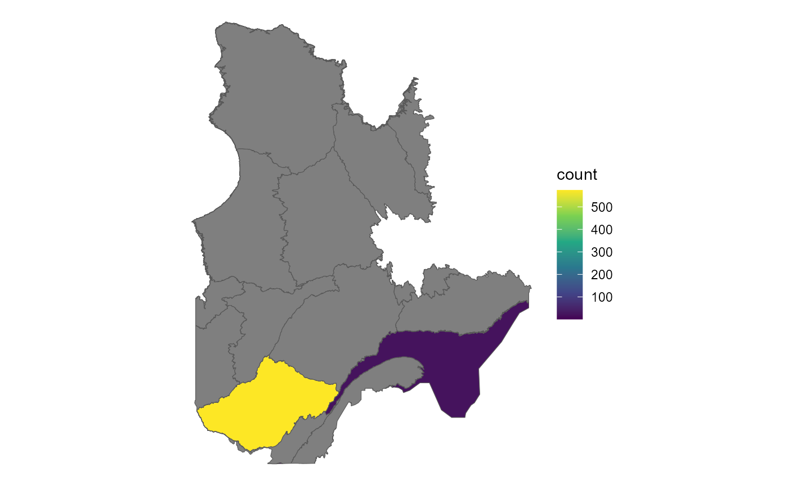
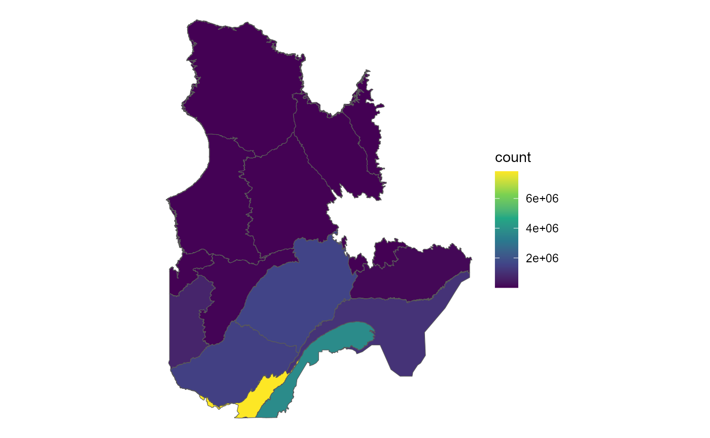

clara_region_bird_counts.RmdDans l’exemple suivant, nous allons utiliser la tables de comptes d’observations d’oiseaux bird_cadre_eco_counts pour obtenir les comptes d’espèces pour les régions du cadre de référence écologique du Québec.
Cette table doit être filtrée par l’identifiant de l’espèce d’intérêt et par l’identifiant de la région d’intérêt. L’identifiant de l’espèce peut être obtenu à partir de la table taxa et l’identifiant de la région peut être obtenu à partir de la table regions.
# Get the species of interest for the study
s = "Grus canadensis"
taxa <- get_taxa(scientific_name = s )
# Get the regions of interest for the study
scale_regions <- get_regions(type = 'cadre_eco', scale = 1)
# Plot the regions geometry with sf
plot(scale_regions$geometry)NOTE: Il est important de noter que l’appel à la fonction get_regions retourne un objet sf, permettant de filtrer et visualiser les géométries à l’aide de la librairie du même nom. Il est possible aussi d’accélérer le téléchargement en ignorant les géométries en ajoutant l’argument geometry = FALSE à la fonction get_regions.
Une fois les identifiants de régions et taxons obtenus, il est possible d’itérer sur les régions pour obtenir les comptes d’espèces pour chaque région en obtenant les valeurs filtrées de la table bird_cadre_eco_counts à l’aide de la fonction get_gen.
# Loop over the regions
data <- data.frame()
for (fid in scale_regions$fid) { # Can also iterate over regions$fid
# Get the data for the year of interest
new_data <- get_gen('bird_cadre_eco_counts',
id_taxa_obs=taxa$id_taxa_obs,
region_fid = fid,
.schema = 'api'
)
data <- rbind(data, new_data)
}
head(data)
#> # A tibble: 6 x 5
#> region_fid id_taxa_obs month year count_obs
#> <int> <int> <int> <int> <int>
#> 1 859190 6650 3 2018 1
#> 2 859190 6650 4 1994 1
#> 3 859190 6650 4 2003 1
#> 4 859190 6650 4 2004 1
#> 5 859190 6650 4 2006 2
#> 6 859190 6650 4 2007 1Une synthèse de tous les comptes peuvent être obtenus en utilisant la fonction aggregate de la librairie dplyr. On peut ensuite visualiser les comptes d’espèces pour chaque région à l’aide de la fonction plot de la librairie ggplot2 et les géométries des régions à l’aide de la fonction plot de la librairie sf.
library(dplyr)
library(ggplot2)
library(sf)
#> Linking to GEOS 3.9.1, GDAL 3.2.1, PROJ 7.2.1
# Aggregate the data
cadre_eco_sum <- data %>%
group_by(region_fid) %>%
summarise(count = sum(count_obs))
# Join the scale_regions sf object with the aggregated data
cadre_eco_sum <- left_join(scale_regions, cadre_eco_sum, by = c('fid' = 'region_fid'))
# Plot the data
ggplot() +
geom_sf(data = cadre_eco_sum, aes(fill = count)) +
scale_fill_viridis_c() +
theme_void()
De la même manière, il faut d’abord récupérer les taxons liés aux oiseaux, puis les régions du cadre de référence écologique du Québec. Ensuite, il faut itérer sur les régions pour obtenir les comptes d’oiseaux pour chaque région. Finalement, il faut agréger les données pour obtenir le compte total d’oiseaux observés pour chaque région.
# Get the species of interest for the study
birds <- get_taxa(scientific_name = 'Aves')
# Print number of observed taxa related to birds
print(paste0('Number of observed taxa related to birds: ', length(birds$id_taxa_obs)))
#> [1] "Number of observed taxa related to birds: 724"Il faut noter que ce nombre de taxons peut contenir des synonymes. On peut connaître la richesse observée pour ces taxons en utilisant la méthode obs_summary disponible avec la fonction get_gen.
# Get the observed richness for the taxa
obs_summary <- post_gen('rpc/obs_summary',
data = list("taxa_keys" = birds$id_taxa_obs),
.schema = 'atlas_api'
)
print(paste0('Observed richness for the taxa: ', obs_summary$taxa_count))
#> [1] "Observed richness for the taxa: 464"
print(paste0('Number of observations: ', obs_summary$obs_count))
#> [1] "Number of observations: 16614814"On peut finalement obtenir les régions du cadre de référence écologique du Québec et itérer sur les régions pour obtenir les comptes d’oiseaux pour chaque région.
# Get the regions of interest for the study
scale_regions <- get_regions(type = 'cadre_eco', scale = 1)
data <- data.frame()
for (id_taxa_obs in birds$id_taxa_obs) {
new_data <- get_gen('obs_region_counts',
id_taxa_obs = id_taxa_obs,
fid = scale_regions$fid,
.schema = 'atlas_api'
)
data <- rbind(data, new_data)
}Finalement, il faut agréger les données pour obtenir le compte total d’oiseaux observés pour chaque région.
# Aggregate the data
cadre_eco_sum <- data %>%
group_by(fid) %>%
summarise(count = sum(count_obs))
# Join the scale_regions sf object with the aggregated data
cadre_eco_sum <- left_join(scale_regions, cadre_eco_sum, by = c('fid' = 'fid'))
# Plot the data
ggplot() +
geom_sf(data = cadre_eco_sum, aes(fill = count)) +
scale_fill_viridis_c() +
theme_void()